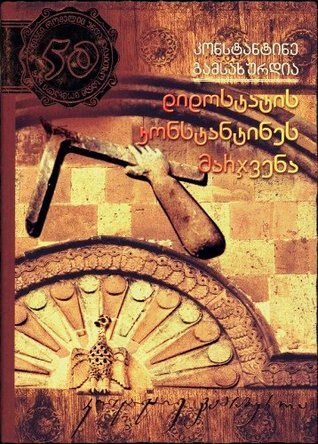
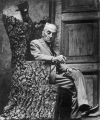

დიდოსტატის მარჯვენა
ინფორმაცია წიგნზე
ავტორი: კონსტანტინე გამსახურდია
ჟანრი: ისტორიული , კლასიკა
გამოშვების თარიღი: 1939 წელი
აღწერა:
კონსტანტინე გამსახურდიას ისტორული რომანი ,,დიდოსტატის კონსტანტინეს მარჯვენა“ სრულყოფილად წარმოგვიდგენს ქართული რენესანსის ეპოქას, წინააღმდეგობებით, კონფლიქტებით და ,,მრუმე ღამეებით“ აღსავსე მკაცრ საუკუნეს.
კონსტანტინე გამსახურდია იყო მე-20 საუკუნის ქართველი კლასიკური მწერალი და ცნობილი საზოგადო ქველმოქმედი, საქართველოს მეცნიერებათა აკადემიის აკადემიკოსი, ფ. ბერლინის უნივერსიტეტის და საქართველოს შოთა რუსთაველის სახელმწიფო პრემიის ლაურეატი.
კონსტანტინე გამსახურდია დაიბადა 1893 წელს, ქალაქ აბაშაში (სამეგრელო, დასავლეთ საქართველოს რაიონი). მისი მამა იყო თავადი სვიმონ გამსახურდია. 1911 წელს კონსტანტინემ დაამთავრა ქუთაისის (დასავლეთ საქართველო) ქართული გიმნაზია, ხოლო 1918 წელს ბერლინის უნივერსიტეტი (გერმანია).
1918 წელს გამსახურდია გახდა თბილისის სახელმწიფო უნივერსიტეტის (თსუ) დამფუძნებელი საზოგადოების გამგეობის წევრი და 1920 - 1924 წლებში ამავე უნივერსიტეტის გერმანული ლიტერატურის ასოცირებული პროფესორი. 1918 - 1919 წლებში გამსახურდია იყო საქართველოს დემოკრატიული რესპუბლიკის (DRG) საელჩოს პირველი მდივანი გერმანიაში, ხოლო 1920 წელს DRG-ის სრულუფლებიანი წარმომადგენელი იტალიაში. 1912-1919 წლებში გერმანულ პრესაში დაიბეჭდა გამსახურდიას 30-მდე ნაშრომი. გამსახურდიამ გერმანულ ენაზე ორი წიგნი გამოსცა; „კავკასია და მსოფლიო ომი“ (ვაიმარი, 1916) და „ინგლისისა და რუსეთის აღმოსავლური პოლიტიკა“ (ბერლინი, 1917). კონსტანტინე გამსახურდია ასევე იყო საქართველოს ეროვნულ-განმათავისუფლებელი მოძრაობის 1921-1930-იანი წლების ერთ-ერთი ლიდერი. 1924 - 1925 და 1926 - 1928 წლებში დააპატიმრეს GPU. გამსახურდია იყო რამდენიმე გამოჩენილი ქართული რომანის ავტორი, მათ შორის "დიდი ოსტატის ხელი", "მთვარის გატაცება", "დავით აღმაშენებლის ტეტრალოგია" და ა.შ. გოეთეს ცხოვრება და მოღვაწეობა.
კონსტანტინე გამსახურდია იყო საქართველოს რესპუბლიკის პირველი დემოკრატიულად არჩეული პრეზიდენტის, დოქტორი ზვიად გამსახურდიას მამა.